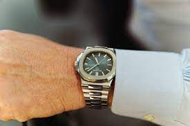

Timless Elegance and innovation

product ratings: 9.70/10(based on +100 customer review)
price:$299.0
product description:Experience the epitome of luxury with our Rolex watch, a masterpiece of Swiss engineering. This sleek timepiece features a 40mm stainless steel case, scratch-resistant sapphire crystal, and a striking black dial with luminescent hands. The iconic Oyster bracelet ensures a comfortable fit, while the automatic movement provides precise timekeeping. Water-resistant up to 100 meters, this watch is perfect for divers and style enthusiasts alike. With its rich heritage and exceptional craftsmanship, this Rolex watch is a timeless investment for any connoisseur
Aim To Creat Something

product rating:9.50/10(based on +100 customer review)
price:$289.0
product description:Patek Philippe, a Swiss luxury watch manufacturer, is renowned for its exquisite timepieces that embody precision, elegance, and craftsmanship. Founded in 1839, the brand is synonymous with high-quality mechanical watches that showcase intricate complications, such as perpetual calendars, minute repeaters, and chronographs. Patek Philippe's watches are crafted from precious materials like gold, platinum, and diamonds, and feature intricate engravings and ornate details. With a rich history and tradition of innovation, Patek Philippe watches are coveted by connoisseurs and collectors, and are often considered heirloom pieces that can be passed down through generations